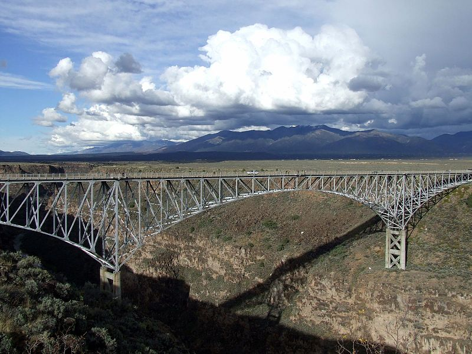

Far Flung Adventures
Whitewater rafting in Taos, New Mexico
Adventure & Recreation
With 300+ days of sunshine a year and over a thousand square miles of public wilderness lands, there are hundreds of ways to find your perfect adventure here. A favorite outdoor activity that's been growing in popularity since the 1970s, an inflatable raft is used to navigate a river or body of water. This sport usually requires a team of paddlers, a guide and lots of teamwork. Embark on an exciting Class III whitewater adventure during your vacation in New Mexico. Paddle your way down the Taos with your family or friends in style, even if you're a first-timer.
Join UsFamily Friendly
Map Navigations
Difficulty Level Classification
- Class I, Easy: Calm waters not paddling request, sightseen enjoy, good for families with kids.
- Class II, Beginners: Fast current, with ripples and small waves. Little obstructions that can be easily surpassed with some training. The risk for swimmers is low and self-rescue easy.
- Class III, Beginners: Direct rapids with wide canals. Simple maneuvers are needed on some sections of the river. Scarce danger for swimmers.
- Class IV, Intermediate: Rapids with moderate waves. Narrow passages and rapid currents, require complex maneuvers. A previous experience is recommended.
- Class V, Only for expert teams: Intense rapids, requiring precise control of the ship in turbulent waters. Many of the maneuvers should be done quickly, and under pressure. Water conditions make self-rescue difficult, so group's assistance is necessary. Upper Pacuare River & Upper Naranjo River, El Chorro section.
- Class VI; Extreme: Very long and violent rapids. Descents may have waves, big holes and abrupt falls with complex routes. Rescue is very difficult. Consequences of errors are severe and rescue may be impossible. Waterfalls, big drops. No recommended to be run.